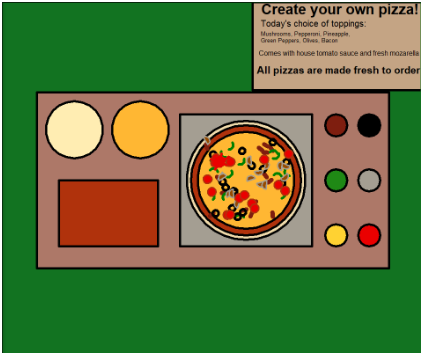
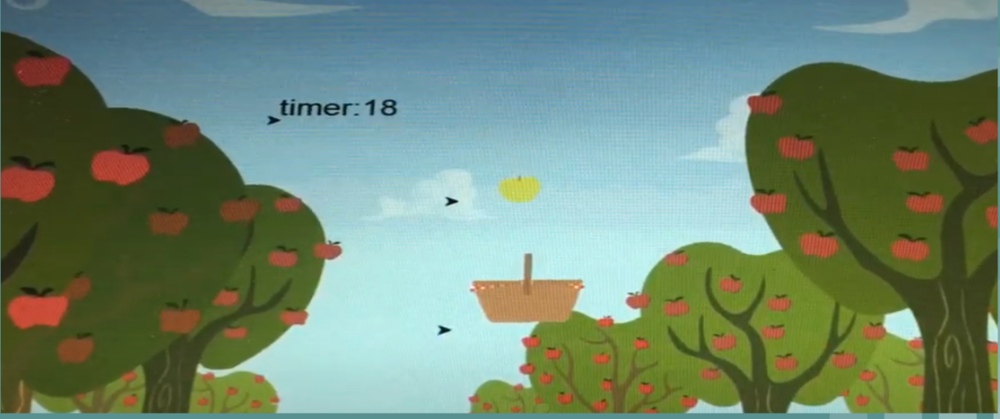
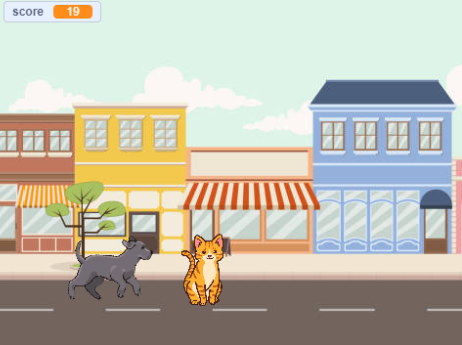
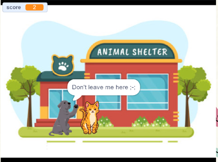
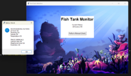
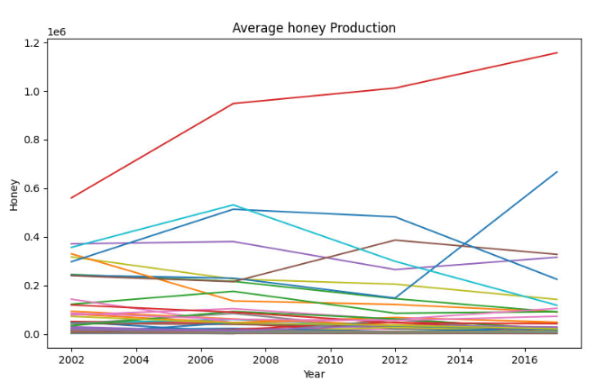

Home
Portfolio
About Me
This is my Portfolio Page!
PLTW 1.1.9 Project: Turtle's Pizzeria

In our group we used iterations, conditionals, and loops to create a game where the user can make a customizable pizza.
1.2.5 Project: Apple Sorter

We used loops, conditionals, etc. to create a game that will drop randomly colored apples in random places. The goal of the game is to collect the specific colored apple and build up your score before the timer runs out in order to make it onto the leaderboard.
Scratch Project: Cat and Dog Chase


In our game the dog is chasing a cat, but the goal is to ve a good dog and avoid the cat by jumping over it. If the dog catches the cat the dog will be sent the animal shelter.
A Phishy Fish Tank

In this project we identified security vulnerabilities, identified and fixed problems in the monitoring system, and made recommendations to improve the software for the future.
4.1.4 Project: Simple Birth Rates
In trhis project we used the Simple Birth Rates simulation from NetLogo to evaluate the different functions of the model and analyze how they apply to the real world. We looked at what was included versus excluded from the model, as well as the implementation of randomness into the simulation. https://docs.google.com/presentation/d/1k7DNPMBolmsIzOTm5TO-dSW3TgW7pUPBeQKDe40YlyE/edit?usp=sharing
3.1.6 Project: Rover Phone Home
In this project we organized data into categories for light, sound, temperature, and wind in order to determine which geographical region the rover was located in on an alien planet.
3.2.4 Project: Making Meaning From Data

In this project we accesessed data from the web that has been collected pertaining to bee colony information among different states. By processing the data we we able to understand the trends and affects of different variables on bee colonies.